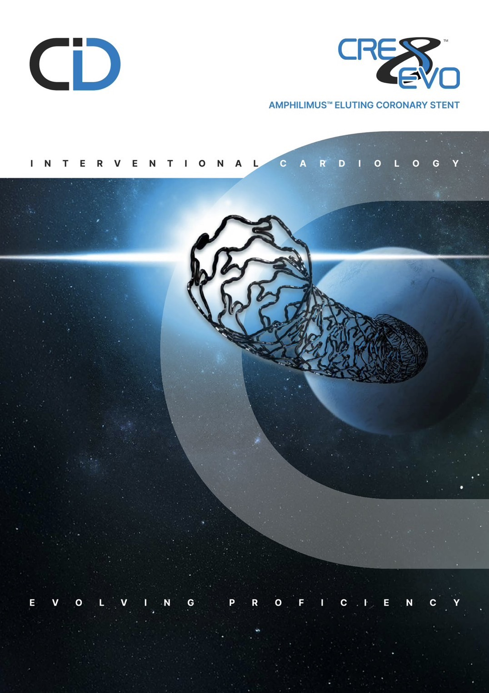
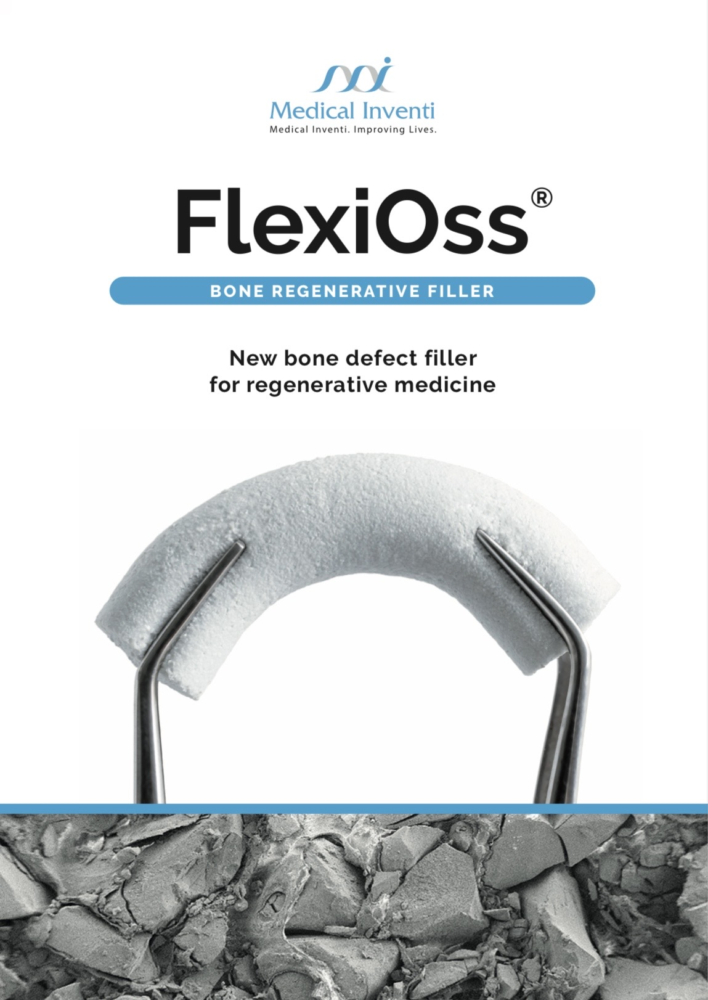

我們是以關懷人類健康為宗旨的專業醫療生技公司。憑藉著對醫療科技的敏銳度，我們引進國內外先進醫療器材與特殊營養品，致力於為臨床醫師合作提供更多元的治療選擇，並以病患為優先出發點打造全方位的健康照護體系。
展現卓越產品專業力，全台已成功進用 21 家醫學中心、15 家區域醫院及 10 家地區醫院。
深入基層醫療體系，南部已有近 50 家診所穩定使用本公司產品。我們不僅是產品的供應者，更是醫療團隊值得信賴的合作夥伴。
嚴選國內外高階微創醫療設備與器材，供應全台各級醫療院所。
提供具備科學實證之專業營養補充方案。
結合產品優勢，提供後續的健康管理服務，確保照護品質。

CID CRE8 EVO

FlexiOss®